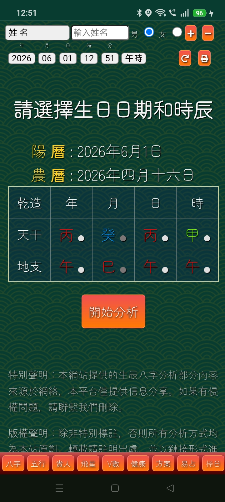

MyPaths | 八字命理分析系统
MyPaths is a highly accurate Metaphysical Destiny Engine that decodes personal characteristics using the Four Pillars of Destiny (BaZi). By parsing complex timelines, it maps out precise visualizations tracking Heavenly Stems, Earthly Branches, Main Stars, and Hidden Stems (藏干). MyPaths 是一款高精度的东方八字命理数字化运算工具。通过精确对齐干支历法，系统能进行高集成度排盘并深度解析主星、副星数据（藏干）、五行生克结构、大运流年宜忌以及诸神煞演变。

Velo Drivers Co-Pilot
Velo is a high-utility translation co-pilot built to eliminate language barriers straight from the driver's seat. Break down communication gaps instantly with reliable workflow interfaces, optimized preset driving phrases, or intuitive voice assistance. Velo 是专为效率出行打造的车载多功能辅助工具。集成了高频通用的日常驾驶快捷短语方案与即时语音应答模块，旨在协助广大驾驶人员在复杂的多元语境下安全沟通、顺畅通行。
01 / Main Translation Hub

02 / Scenario Driving Phrases
03 / Language Resource Setup

04 / Engine Preferences Config